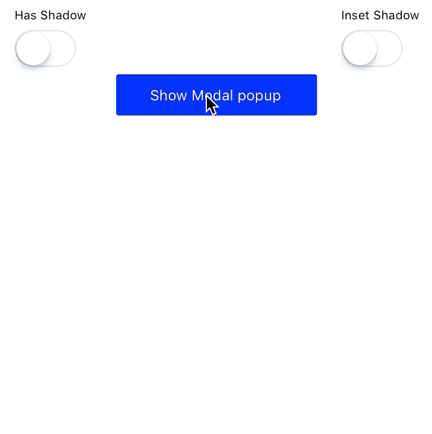
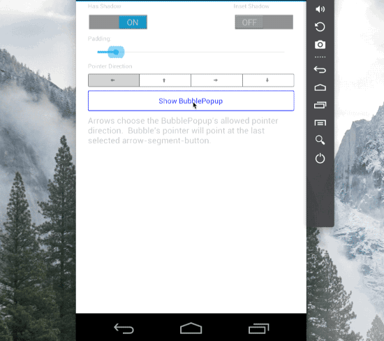
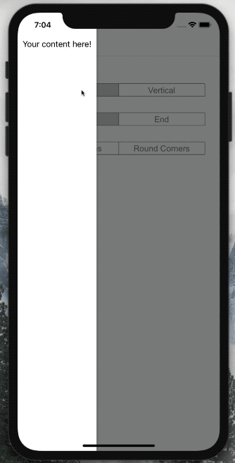

Forms9Patch Popups
Yet another thing missing from Xamarin Forms is a comprehensive set of popup views. Forms9Patch has a eight (ModalPopup, BubblePopup, FlyoutPopup, Toast, TargetedToast, PermissionPopup, ActivityIndicatorPopup and TargetedMenu) popups to simplify the most common tasks. However, this comes at a price! Forms9Patch popups (like a number of other Forms9Patch elements) use Forms9Patch.Image - which means Forms9Patch popups are IDisposable. There is an upside to this. See the Memory Management for more information.
Android Note
You will need to add the following OnBackButtonPressed code to your Android application's MainActivity in order to have popups respond to the Android hardware backbutton.
public class MainActivity : FormsApplicationActivity
{
...
public override void OnBackPressed()
{
if (Forms9Patch.Popup.SendBackPressed(base.OnBackPressed))
{
// do something here if there are some popups in the popup stack
}
else
{
// do something else if there are not any popups in the popup stack
}
}
...
}
Common Properties, Methods and Events
The following properties and methods are common to all Forms9Patch popups, except ActivityIndicatorPopup:
Common Appearance Properties
BackgroundImage: TheForms9Patch.Imagedisplayed as the popup's background.BackgroundColor: popup's optional background color.PopAfter: theTimeSpan, after appearing, at which the popup will pop (disappear) without user interaction. Popup will not pop itself whenPopAfteris zero (default) or negative.HasShadow: one more time ... this actually works on Android. Has no effect when BackgroundColor has not been set.OutlineColor: optional outline color.OutlineWidth: width of optional outline.OutlineRadius: outline's corner radius.ShadowInverted: to apply a recessed effect to the layout (if HasShadow is enabled).
Page Overlay (between the popup and the page the popup sets upon) Properties
PageOverlayColor: The Color of the page overlay upon which the ModalPopup sets. Default value isColor.Rgba(0.5, 0.5, 0.5, 0.5).CancelOnBackgroundTouch: Controls is the popup is cancelled if the background is touched. Default value is true.CancelOnBackButtonTouch: Controls is the popup is cancelled if the back button (Android only) is touched. Default value is true.
Common Memory Management Properties
Retain: a boolean (default:false) used to indicate if the popup and its contents should be removed from the view hierarchy as soon as the view is hidden. Why would I bother to have this? ANDROID! If you have a heavy layout that will be shown multiple times, you may not want to re-render each time it is made visible. SeeingRetain=truewill keep your popup and its content in the view hierarchy so it won't have to be re-rendered the next time you want to present it.
Common Methods
void Cancel(): Programmatically cancels the Popup.
Common Events
Cancelled: Called when the popup has been canceled by the user tapping outside its bounds.
Forms9Patch.ModelPopup
The most needed missing component: a simple content popup that is a content container which centers its contents on the main page. Since you may want a popup container with a background image, Forms9Patch provides the ModalPopup element for this purpose. Once you have initialized a Forms9Patch popup view, set the IsVisible property to true to present it.
Forms9Patch.ModelPopup Unique Properties
Content: TheXamarin.Forms.VisualElementthat will be the content for the popup view. Layouts and Views are fair game.ElementShape:ElementShape.Rectangle,ElementShape.Square,ElementShape.Circle,ElementShape.Ellipse, andElementShape.Obround. Controls the shape of both the border and the background clipping region.
|  |
|---|
Forms9Patch.BubblePopup
The popup that is missing from both Xamarin.Forms and Android is a pointer bubble popup - a popup that points to another element. Given a Target element, some Content to display, and an allowed PointerDirection, Forms9Patch.BubblePopup will best fit a popup bubble pointing the the Target. Note that, unlike the ModalPopup element, BubblePopup does not support the BackgroundImage nor ElementShape properties. If you do not specify the Target, BubblePopup will present its content in a ModalPopup. As with ModalPopup, once you have initialized a BubblePopup you will need to set the IsVisible property to true to present it.
Forms9Patch.BubblePopup Unique Properties
Content: TheVisualElementthat will be the content for the popup view. Layouts and Views are fair game.Target: TheXamarin.Forms.VisualElementto which the bubble popup will point.PointerLength: how long is the pointer.PointerTipRadius: what is the radius of the pointer's tip?PointerDirection: what directions is the bubble popup allow to point? Type:PointerDirectionPointerCornerRadius: what is the radius of the notch between the bubble's body and the pointer?
 |
 |
|---|
Forms9Patch.FlyoutPopup
Another popup missing is a flyout - to present content such as menus or master control views. Give Forms9Patch.FlyoutPopup some content to display, set IsVisible=true and it will by default have it flyout from the left edge of the current Page. Change the Orientation property to have the flyout come from left/right (Horizontal) or top/bottom (Vertical). Change the Alignment property to switch between left or right (Start or End) for Horizontal orientation and between top or bottom (Start or End) for Vertical orientation. Want to be sure the width (for Horizontal orientation) is fixed? Set the WidthRequest of your Content and it will use that to determine the flyout's width. Likewise, set the Content's HeightRequest for Vertical flyouts.
Note that FlyoutPopup also does the hard work of figuring out where the SafeArea is for your content. You can see that in action in the below GIF.
Forms9Patch.FlyoutPopup Unique Properties
Content: TheVisualElementthat will be the content for the popup view. Layouts and Views are fair game.Orientation: Is the popup going to fly in horizontally or vertically?Alignment: Is the popup going to be at the left\top (Start) or right\bottom (End)
|  |
|---|
Forms9Patch.Toast
Sometimes you simply need to put a message up on the screen. Given some HTML formatted text and an HTML formatted title Toast will display them in a popup with an (optional but enabled by default) [OK] button. Toast is inherited from the ModalPopup element so it does support background images. Unlike ModalPopup, Toast has the Create(string title, string text) static method that will generate and present the toast. You can still manually construct and present a Toast by using its constructor and setting its IsVisible property to true.
Forms9Patch.Toast Unique Properties
Title: The title for the Toast. See HTML Markup for supported markup.Text: The text for the Toast. See HTML Markup for supported markup.ElementShape:ElementShape.Rectangle,ElementShape.Square,ElementShape.Circle,ElementShape.Ellipse, andElementShape.Obround. Controls the shape of both the border and the background clipping region.
Forms9Patch.Toast Unique Methods
static Toast Create(string title, string text): instantiates and presents aToast.
Forms9Patch.TargetedToast
Just as Toast is a convenience version of ModalPopup, TargetedToast is a convenience version of BubblePopup. Given a Target as a Xamarin.Forms.VisualElement, a Title, some Text to display, and an allowed PointerDirection, Forms9Patch.TargetedToast will best fit a popup bubble pointing the the Target. Like BubblePopup element, BubblePopup does not support background images. If you do not specify the Target, it will present itself as a Toast. As with Toast, you can use the Create static method to instantiate and present a TargetedToast.
Forms9Patch.TargetedToast Unique Properties
Title: The title for the Toast. See HTML Markup for supported markup.Text: The text for the Toast. See HTML Markup for supported markup.Target: TheXamarin.Forms.VisualElementto which the bubble popup will point.OkButtonColor: Background color for [OK] button.OkTextColor: Text color for [OK] button.OKText: Text for [OK] button. Set to null to remove the [OK] button from the popup. As noted above, you don't want this set to null whenCancelOnBackgroundTouchis set tofalse.
Forms9Patch.TargetedToast Unique Methods
static TargetedToast Create(VisualElement target, string title, string text): instantiates and presents aTargetedToast.
Forms9Patch.PermissionPopup
Sometimes you simply need to ask a yes/no question. Given some HTML formatted text and an HTML formatted title, PermissionPopup will display them in a popup with [OK] and [Cancel] buttons. PermissionPopup is inherited from the ModalPopup element so it does support background images. Unlike ModalPopup, PermissionPopup has the Create(string title, string text) static method that will generate and present the toast. You can still manually construct and present a PermissionPopup by using its constructor and setting its IsVisible property to true. Unlike Toast, the [OK] and [Cancel] buttons cannot be removed from the layout by setting their text to null.
Forms9Patch.PermissionPopup Unique Properties
Title: The title for the Toast. See HTML Markup for supported markup.Text: The text for the Toast. See HTML Markup for supported markup.OkButtonColor: Background color for [OK] button.OkTextColor: Text color for [OK] button.OKText: Text for [OK] button.CancelButtonColor: Background color for [Cancel] button.CancelTextColor: Text color for [Cancel] button.CancelText: Text for [Cancel] button.PermissionState: An enum (Pending,Ok,Cancelled,Rejected) describing the state of the permission granting process. This is very useful when thePermissionPopupis wrapped in ausingblock and is examined after aWaitForCancelAsync()call.
Forms9Patch.PermissionPopup Unique Methods
static PermissionPopup Create(string title, string text, string okText = "OK", string cancelText = "Cancel"): instantiates and presents aPermissionPopup.
Forms9Patch.PermissionPopup Unique Events
OkTapped: Called when the [OK] button has been tapped.
Forms9Patch.TargetedMenu
Sometimes you need a popup menu with a list of menu items. And, if there are more menu items than available room, the menu needs to have pagination. Forms9Patch.TargetedMenu combines SegmentedController's use of a List<Segment> to define the menu items with features of TargetedToast to give this functionality.
Forms9Patch.TargetedMenu Unique Properties
Segments: aListofForms9Patch.Segmentelements that define the menu items. See Forms9Patch.Segment for how to set a segment's text and icons.FontSize: size of font to be used.TextColor: color of text for each menu item.SeparatorColor: color of separator line between menu itemsSeparatorWidth: thickness of separator line between menu itemsHapticEffect: if available on platform and enabled viaHapticMode, what will be the haptic effect:None, platform'sKeyClickeffect, platform'sReturnkey effect, or platformsDeletekey effect?HapticMode: if available on platform, enable, disable, or use default behavior for the haptic effect.
Forms9Patch.TargetedMenu Unique Events
public event SegmentedControlEventHandler SegmentTapped: fired when a menu item (segment) has been tapped.
Forms9Patch.ActivityIndicatorPopup
This popup is probably misnamed. Its purpose is to present an activity indicator and block interaction with the app. Because ModalPopup had everything I needed to build this, I named it a popup. Probably should have thought about that more. Also, because this is something you typically just want to fire and forget, like Toast and TargetedToast, ActivityIndicatorPopup has a Create static method to instantiate and present an instance in one call.
Note that
Forms9Patch.ActivityIndicatorPopup Properties
PageOverlayColor: TheColorof the page overlay upon which theModalPopupsets. Default value isColor.Rgba(0.5, 0.5, 0.5, 0.5).Color:Colorof the activity indicator.CancelOnBackgroundTouch: Controls is the popup is cancelled if the background is touched. Default value is true.
Forms9Patch.ActivityIndicatorPopup Methods
static ActivityIndicatorPopup Create()void Cancel(): Programmatically cancels the popup.
Forms9Patch.ActivityIndicatorPopup Events
Cancelled: Called when the popup has been canceled by the user tapping outside its bounds.
Memory Management
With all Forms9Patch popup's, the good news is the using keyword will make your life much easier. Additionally, Forms9Patch popups have the WaitForPoppedAsync method to allow you to interact with the popup's content before disposal.
Forms9Patch.Toast is the simplest example:
using (Forms9Patch.Toast.Create("Updated","The list was updated.")) { }
In the above example, we're presenting a Toast and there is no need for our code to interact with its content. As such, the using statement attempts to Dipose() our Toast as soon as it can. This all happens because all Forms9Patch popups automatically add a WaitForPoppedAsync() before completing the Dispose(). In other words, the popup won't be disposed until the user takes action to dismiss the popup.
As a more interesting example, take a look at a sample usage of Forms9Patch.PermissionPopup:
using (var permissionPopup = Forms9Patch.PermissionPopup.Create(
"Unit Mismatch",
Items.Count((i) => !i.IsTemplate) > 1
? "This entry (" + operand.ToHtml() + ") does not have units but the existing Cumulative Memory entries do."
: "This entry (" + operand.ToHtml() + ") does not have units but the existing Cumulative Memory entry does.",
"YES"))
{
permissionPopup.Text += "\n\nDo you want to apply the last Cumulative Memory entry's units [" + firstItem.Value.UnitSet + "] to this entry?";
permissionPopup.Parameter = operand;
permissionPopup.IsVisible = true;
await permissionPopup.WaitForPoppedAsync();
if (permissionPopup.PermissionState == PermissionState.Ok)
{
if (operand is Expression expression)
expression.Complete();
operand.ApplyUnitSet(firstItem.Value.UnitSet);
return true;
}
}
In the above example, you can see that we are able to manipulate permissionPopup and subscribe to its events. And, because await WaitForePoppedAsync() is part of its Dispose(), our subscriptions will remain valid up until the user interaction has been completed.
Please note that ActivityIndicatorPopup is slightly different. That is because it can only be cancelled programmatically - not through direct user interaction. With that in mind and for ease of use, calling Dispose() on an ActivityIndicatorPopup will first implicitly call CancelAsync on the ActivityIndicatorPopup before it is disposed. This means you can use the asynchronous calls in the using block to implicitly control the appearance / disappearance / disposal of the ActivityIndicatorPopup. In the below example, the Create() factory method generates the ActivityIndicatorPopup and displays it. Then, after the GetDataAsync() has completed, the using block calls Dispose() on our ActivityIndicatorPopup - implicitly cancelling it before the disposal.
using (Forms9Patch.ActivityIndicatorPopup.Create())
{
await GetDataAsync();
}